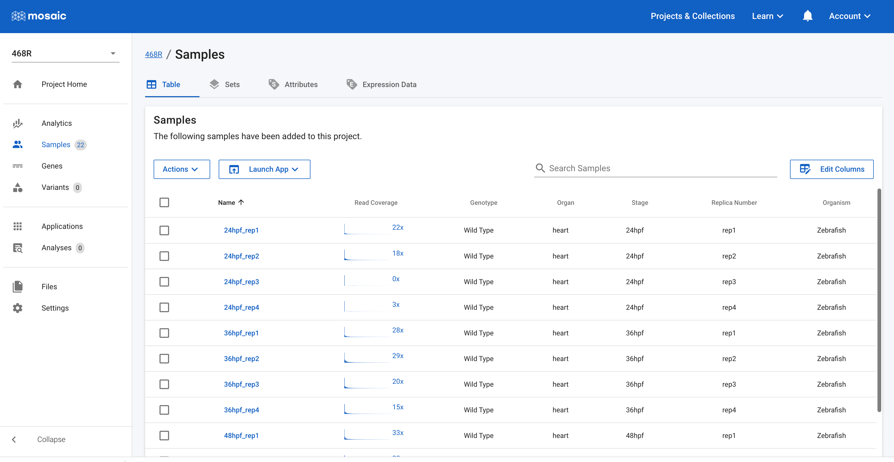

Providing support for CDDRC data
Alistair Ward, 19 October 2022
The CDDRC contains lots of data (mostly RNA-Seq, but also genome and exome data, single-cell RNA-Seq data etc.) for a host of model organisms. The Mosaic platform is being used to provide a visual interface to all of this data, and provide techniques to search and visually analyze this data. Mosaic was originally built to work exclusively with DNA data for human samples and so required significant engineering to ingest these new data types, as well as provide specific charts to allow this data to be explored. A big thank you to the Frameshift team for their continuing efforts to update Mosaic, and the Utah team, especially Carson Holt, for reprocessing and moving data from the old GNomEx system into Mosaic. We are continuing to improve Mosaic to provide intuitive access to all the CDDRC data, so keep checking back to see more updates as they land.
Figure 1.Samples in Mosaic for project 468R.